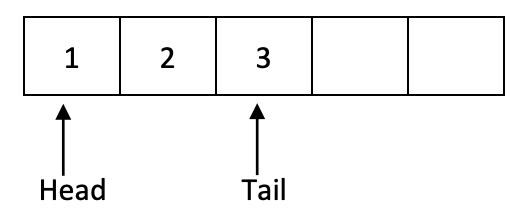
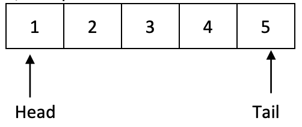
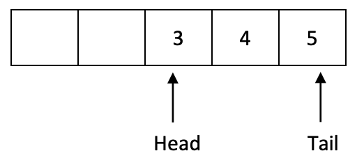
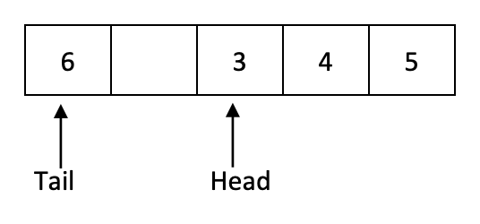

This week’s section exercise consists of several larger problems that will give you practice with designing classes and working with dynamic array allocation. These problems will help you get practice with the skills that you need for the next assignment, where you will start to implement your very own data structures! As you work on these problems, you may find this Classes and Objects Syntax Sheet to be helpful.
Remember that every week we will also be releasing a Qt Creator project containing starter code and testing infrastructure for that week's section problems. When a problem name is followed by the name of a .cpp file, that means you can practice writing the code for that problem in the named file of the Qt Creator project. Here is the zip of the section starter code:
üì¶ Starter project
1) Circle of Life (Circle.h/.cpp)
Topics: Classes
Write a class named Circle that stores information about a circle. Your class must implement the following public interface:
class Circle {
// constructs a new circle with the given radius
Circle(double r);
// returns the area occupied by the circle
double area() const;
// returns the distance around the circle
double circumference() const;
// returns the radius as a real number
double getRadius() const;
// returns a string representation such as "Circle{radius=2.5}"
string toString() const;
};
You are free to add any private member variables or methods that you think are necessary. It might help you to know that there is a global constant PI storing the approximate value of π, roughly 3.14159.
// .h file starts
#pragma once
class Circle {
public:
Circle(double radius);
double area() const;
double circumference() const;
double getRadius() const;
string toString() const;
private:
double r;
}
// .h file ends
// .cpp file starts
#include "Circle.h"
using namespace std;
Circle::Circle(double radius) {
r = radius;
}
double Circle::area() const{
return PI * r * r;
}
double Circle::circumference() const{
return 2 * PI * r;
}
double Circle::getRadius() const{
return r;
}
string Circle::toString() const{
return string("Circle{radius=") + realToString(r) + string("}");
}
// .cpp file ends
2) The Notorious RBQ (RingBufferQueue.h/.cpp)
Topics: Classes, dynamic arrays
Think back to week 2 when we studied collections. We learned about Queues, a "first-in, first-out" data structure. Today in section, we're going to implement a special type of queue called a Ring Buffer Queue. A Ring Buffer Queue, or RBQ, is implemented by using an underlying array. In our implementation, the capacity is capped; once the array is full, additional elements cannot be added until something is dequeued. Another "interesting" thing about RBQs is that we don't want to shift elements when an element is enqueued or dequeued. Instead, we want to keep track of the front and tail of the Queue. For example, say our queue can hold 5 elements and we enqueue 3 elements: 1, 2, 3. Our queue would look like this:

If we enqueued two more elements, our queue would then be full:

At this point, we cannot add any additional elements until we dequeue at least one element. Dequeuing will remove the element at head, and head will move onto the next element. If we dequeue 2 elements, our queue will look like this:

Now there's room to add more elements! Since we still don't want to shift any elements, adding an additional element will wrap around. So, if we enqueue an element, our queue will look like this:

Notice that the tail's index is less than the head's index!
Your job is to implement a RingBufferQueue class. Your class should have the following public methods:
| Method | Description |
|---|---|
void enqueue(int elem) |
Enqueues elem if the queue has room; throws an error if queue is full |
int dequeue() |
Returns and removes the element at the front of the queue; throws a string exception if queue is empty |
int peek() |
Returns element at the front of the queue; throws a string exception if queue is empty |
bool isEmpty() |
Returns true if queue is empty and false otherwise |
bool isFull() |
Returns true if queue is full and false otherwise |
int size() |
Returns number of elements in the queue |
You are welcome to add any private methods or fields that are necessary.
It can be hard to know where to start when writing an entire class, so we've given you this breakdown:
- Start by identifying the private fields you will need, then write the constructor and destructor to initialize the fields and do any cleanup, if necessary. Questions to think about:
- Is it easier to keep track of head and tail (as pictured in the diagrams above)? Or would it be better to track head and size?
- Write
isEmpty(),isFull(),size(), andpeek(). Questions to think about:- Which of these methods can be const? In general, how do you know when a method can be const?
- Write
enqueue()anddequeue(). Remember to handle error conditions! Questions to think about:- Can you call the methods from part 2 to reduce redundancy?
- Would using modular math help with wrapping around?
- Should either of these methods be const?
- Finally, deal with ostream insertion!
If you want more practice with writing classes, think about how you could modify this class to implement a double-ended queue. (A double-ended queue, or deque, is one where you can enqueue and dequeue from either the front or the back).
RingBufferQueue.h
#pragma once
#include <iostream>
class RBQueue {
public:
/* Constructs a new empty queue. */
RBQueue();
~RBQueue();
/* Returns true if the queue contains no elements. */
bool isEmpty() const;
/* Returns true if no additional elements can be enqueued. */
bool isFull() const;
/* Returns number of elements in queue. */
int size() const;
/* Adds the given element to back of queue. */
void enqueue(int elem);
/*
* Removes and returns the front element from the queue
* Throws a string exception if the queue is empty.
*/
int dequeue();
/*
* Returns the front element from the queue without removing it.
* Throws a string exception if the queue is empty.
*/
int peek() const;
private:
// member variables (instance variables / fields)
int* _elements;
int _capacity;
int _numUsed;
int _head;
// by listing this here as a "friend", it can access the private member variables
friend std::ostream& operator <<(std::ostream& out, const RBQueue& queue);
};
RingBufferQueue.cpp
#include "RingBufferQueue.h"
const int kDefaultCapacity = 10;
using namespace std;
RBQueue::RBQueue() {
_capacity = kDefaultCapacity;
_elements = new int[_capacity];
_head = 0;
_numUsed = 0;
}
RBQueue::~RBQueue() {
delete[] _elements;
}
bool RBQueue::isEmpty() const {
return _numUsed == 0;
}
bool RBQueue::isFull() const {
return _numUsed == _capacity;
}
int RBQueue::size() const {
return _numUsed;
}
int RBQueue::peek() const {
if (isEmpty()) {
error("Can't peek from an empty queue!");
}
return _elements[_head];
}
int RBQueue::dequeue() {
if (isEmpty()) {
error("Can't dequeue from an empty queue!");
}
int front = _elements[_head];
_head = (_head + 1) % _capacity;
_numUsed--;
return front;
}
void RBQueue::enqueue(int elem) {
if (isFull()) {
error("Can't enqueue to already full queue!");
}
int tail = (_head + _numUsed) % _capacity;
_elements[tail] = elem;
_numUsed++;
}
ostream& operator <<(ostream& out, const RBQueue& queue) {
out << "{";
if (!queue.isEmpty()) {
// we can access the inner '_elements' member variable because
// this operator is declared as a 'friend' of the queue class
out << queue._elements[queue._head];
for (int i = 1; i < queue._numUsed; i++) {
int index = (queue._head + i) % queue._capacity;
out << ", " << queue._elements[index];
}
}
out << "}";
return out;
}